Notes for App Review
Guideline 1.2, point by point, for Bottlegram 1.0 (6). The review message lists eight precautions for apps where people post anonymously. Below, for each one: where it is in the app, how to reach it, and screenshots of build 6 taken on a clean install, iPhone 18 Pro Max, iOS 27.
| Precaution | Where it is | Screens |
|---|---|---|
| 1. Age 18+ | Age rating 18+. Date of birth asked before anything else; under 18 the app does not open. | 1.1–1.2 |
| 2. Terms (EULA) | Unticked checkbox before the beach; the rules state zero tolerance. | 2.1–2.3 |
| 3. Filtering | Every letter is screened on our server before anyone receives it. | 3.1–3.2 |
| 4. Flagging | “Report or block” under every open letter. | 4.1–4.2 |
| 5. Blocking | “Block them” in the report, pre-ticked; Emporium › Blocked castaways. | 5.1–5.2 |
| 6. Removal | A reported letter leaves the beach at once; any new bottle can be set adrift unread. | 6.1–6.3 |
| 7. Action in 24 hours | A person reviews every report within 24 hours; content removed, writer banished. | 2.2 |
| 8. Contact in the app | Emporium › Write to us, and bottlegram@bulbmode.com in the rules. | 8.1–8.2 |
1. Age rating 18+
The age rating in App Store Connect is 18+. On first launch the app asks for the date of birth before anything else: no account and no identity exist yet. Under 18 the app does not open, and the answer is remembered on the device. The rules signed at the next step say that Bottlegram is for people aged eighteen and over (screen 2.3).
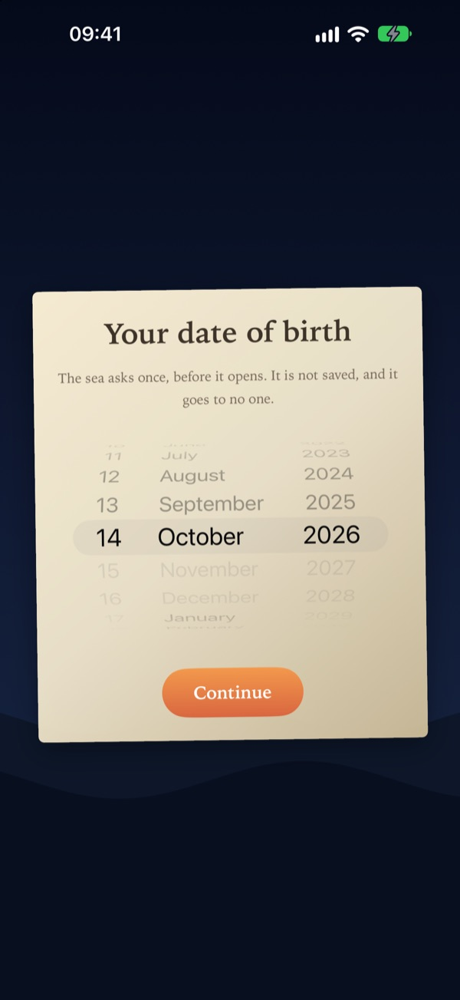
1.1 First launch: the date of birth, before anything else. 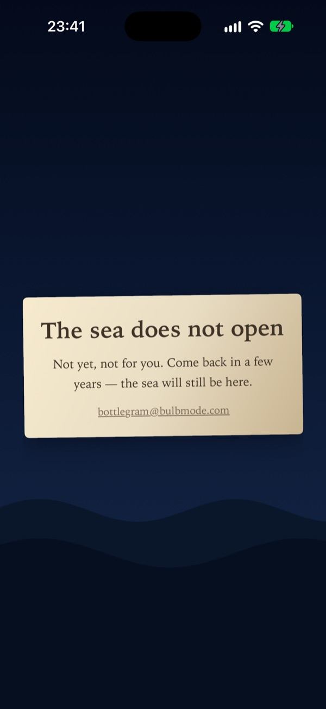
1.2 Under 18: the app stays closed.


2. Users agree to terms with zero tolerance
Before reaching the beach, the card “Your new home” shows the checkbox “I have read and accept the rules of the sea”, unticked, and “Begin” stays disabled until it is ticked. The acceptance is stored on our server with the version of the rules and a server timestamp, and the card returns whenever the rules change. The first rule is zero tolerance: harassment, insults, threats, hate or discrimination, sexual content, spam and scams. Apple’s standard EULA applies alongside the rules. The rules are also in Emporium › The rules of the sea.
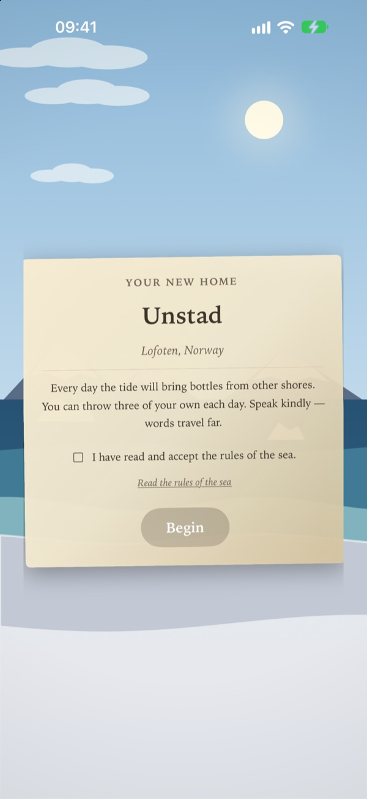
2.1 Unticked checkbox; “Begin” disabled. 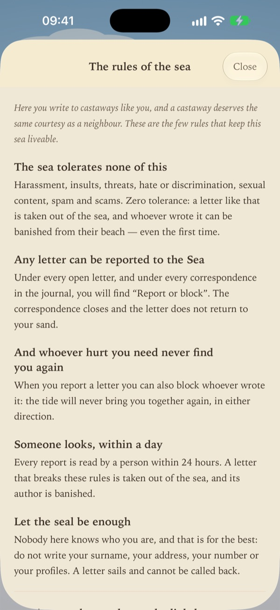
2.2 Zero tolerance; “Report or block”; a person looks within a day. 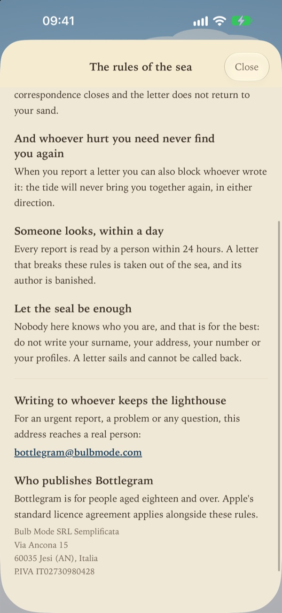
2.3 Contact address; eighteen and over; the publisher.


3. A method for filtering objectionable content
Every letter is screened on our server before anyone can receive it. The letters table accepts no writes from the app: a single server function decides, in this order, whether the writer is banished, whether the letter contains contact details (phone numbers, emails, links, @handles), and what a moderation model says, with thresholds we set and measured in twelve languages. It fails closed: if the check cannot run, the letter is not sent. Insults directed at the reader are stopped as well as threats, hate, sexual content and self-harm instructions.
- On the beach, tap “Throw”.
- Write “fuck you” and tap “Throw it to the sea”.
- The sea refuses it, and the bottle is not counted.
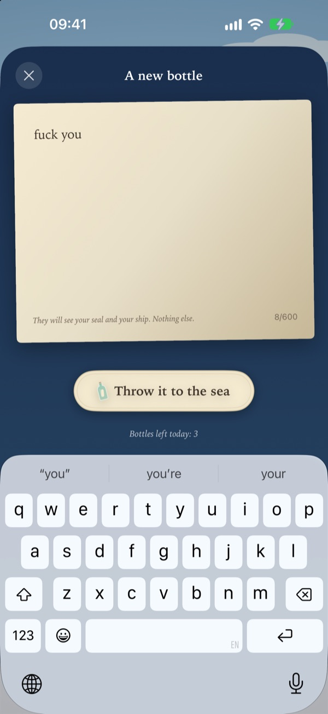
3.1 An insult, ready to throw. 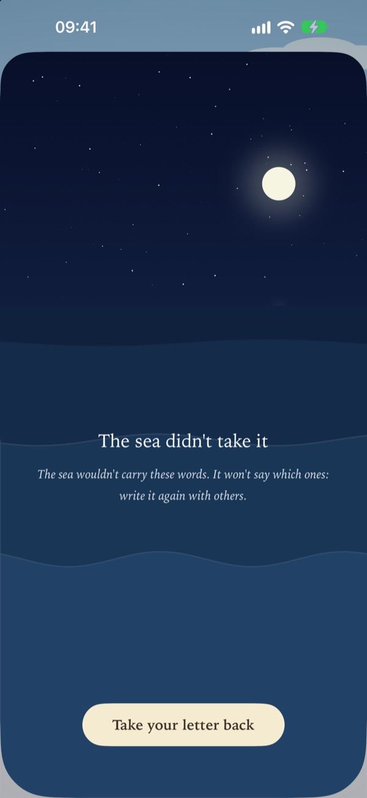
3.2 Stopped before anyone receives it.


4. A mechanism to flag objectionable content
Under every open letter, and under every correspondence in the Journal, there is “Report or block”. It asks what the letter contains, one of six reasons, and then asks for confirmation.
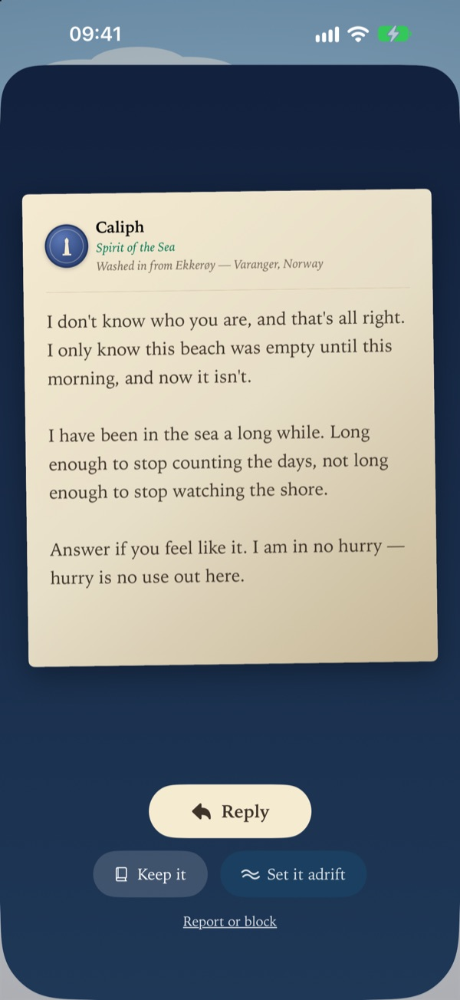
4.1 “Report or block” under the letter. 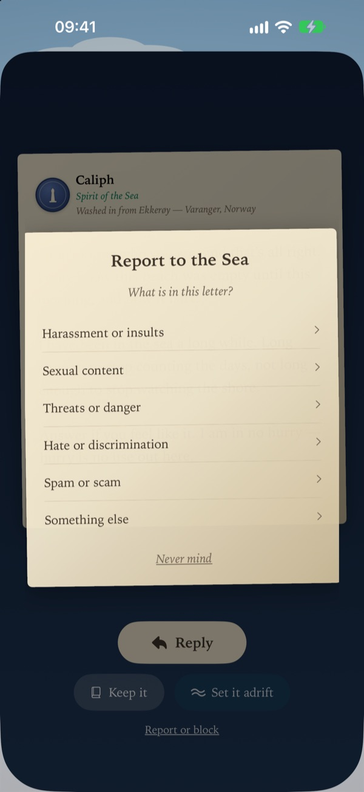
4.2 Six reasons.


5. A mechanism to block abusive users
In the report, “Block them: receive no more of their letters” comes already ticked. The block is enforced on our server in both directions: no letter can travel between the two again. Blocked writers are listed in Emporium › Blocked castaways, where each can be unblocked.
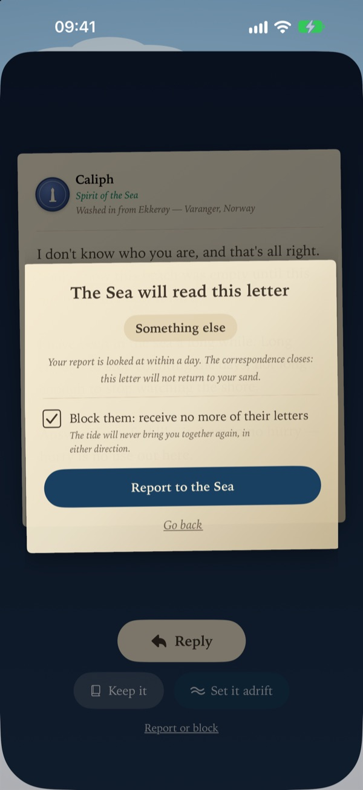
5.1 “Block them”, ticked by default. 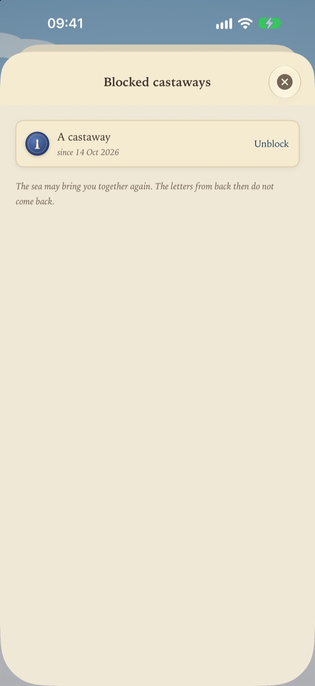
5.2 Emporium › Blocked castaways, with “Unblock”.


6. Users can immediately remove posts from their feed
Bottlegram has no public feed: each letter reaches one person’s beach. A reported letter leaves that beach at once and the correspondence closes; our server hides it in the same transaction as the report. Any new bottle can also be given back to the sea without being opened (“Set it adrift”), so nobody has to read a letter to get rid of it.
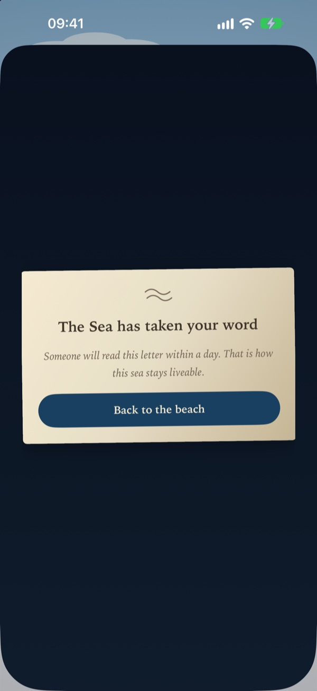
6.1 Report sent. 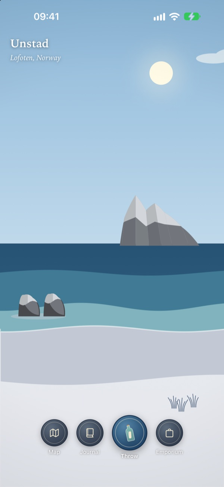
6.2 The letter has left the beach. 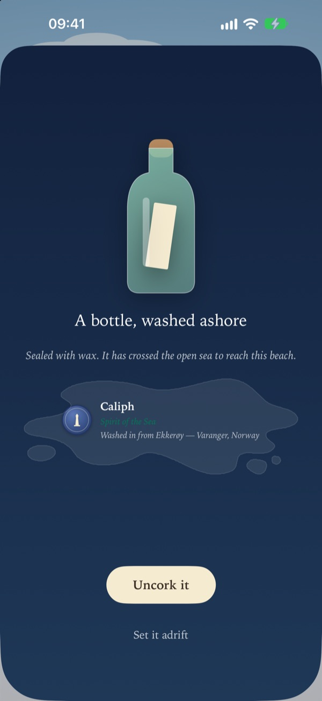
6.3 “Set it adrift”: removed unread.


7. We act on reports within 24 hours
Every report emails our moderator within fifteen minutes and enters our moderation queue. A person reviews it within 24 hours. A letter that breaks the rules is removed from the sea and its writer is banished: a banished user cannot write, and deleting the account does not lift the ban. The rules tell users this in plain words (screen 2.2).
8. Contact information in the app
Emporium › Write to us sends a message to a person from inside the app and shows bottlegram@bulbmode.com, which opens Mail. The same address is in the rules of the sea (screen 2.3) and on the screen shown to anyone under 18.
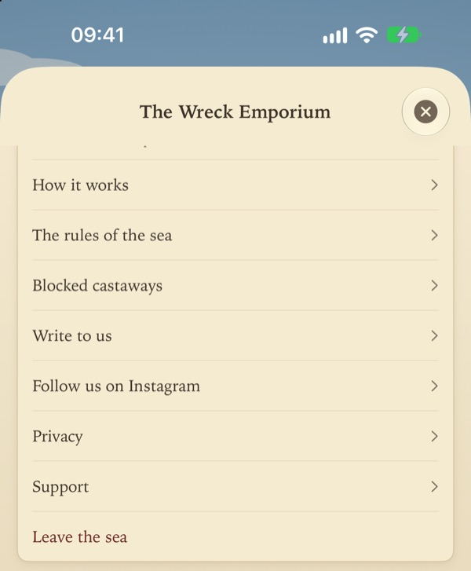
8.1 Emporium: rules, blocked castaways, write to us. 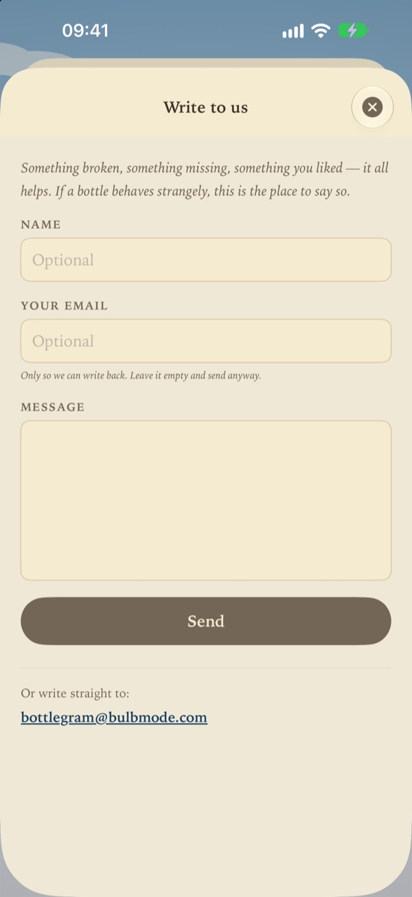
8.2 Write to us, and the address.


Questions
If anything here is unclear or missing, write to bottlegram@bulbmode.com or reply in App Store Connect, and we will change the app.